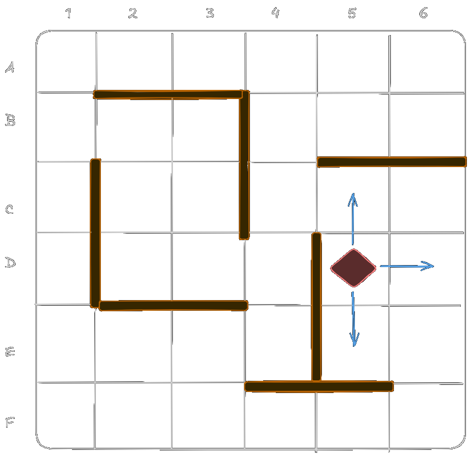
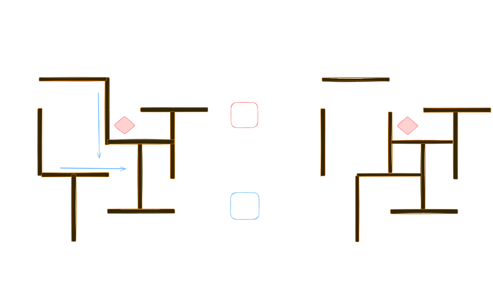

Pen and paper, to record information of your journey, such as
hints gathered through the Scout action.
Three six-sided dice (2D6), preferably of different colors. Two
of them will be used for The Wheel mechanism, while
the last one will serve during the Scout
action.
A 6 x 6 grid, either drawn or printed. Rows are labelled with
letters from A to F, while digits from 1 to 6 are assigned to
columns.
36 decans tiles, available as printable PDF or individual SVG
files.
10 wall markers of grid length 2.
A set of tokens to represent the party’s Karma,
Visit, Secret Key, and
Action Points.
One pawn, representing your adventuring party’s position in the
dungeon.
A printed or digital version of the Rooms
content, Player’s Turn and Wheel Random Table.
Before starting to play:
Assign yourself Karma tokens. The lesser
tokens, the harder the game will be. We advice for a number between
2 (hard) and 4 (easy).
Place randomly five wall markers for each row, and as much of
them for the columns.
Randomly distribute the 36 decans tiles on the grid face
down.
Player Turn
Spend 4 action points in order to perform a combination of
Advance and Scout actions.
Read the Room content of the tile where your
pawn has landed.
Place a Visit token on the tile. If the number
of piled tokens reaches three, the Dragon awakens
and the game is over.
The Wheel activates, moving the walls based on
the result of the previous turn. Ignore this step on the first
turn.
Roll to determine the following move of The
Wheel according to the 2D6 Random Table.
End-of-game
The game ends in one of the following circumstances:
The adventurers have collected 3 Artefact
Fragments. You win.
If the player visits the same cell three times, the guarding
Dragon awakes and feasts on the flesh of the
adventurers. Game over.
If Karma reaches 0 game is over.
Actions
At the beginning of each turn, the player receives 4
Action Points to be spend for any combination of
the Advance and Scout actions.
Advance
The player moves the pawn representing the adventuring party to
an adjacent tile. A tile is adjacent if the distance between the
source and destination is one and there are no walls impeding the
passage. Diagonal moves are not allowed.

Example of the Advance action on the
grid. The arrows indicate the adjacent cells.
Scout
Roll a D6. If the result is higher than your current
Karma value you can reveal the content of an
adjacent Room. Note that you may use a
Secret Key in combination with this action in order
to gain information of a tile behind a wall.
The Wheel
Combinatorial wheels, volvelles, gorghi
d’artificio of Early Modernity have been considered precursors
of modern computers, paper machines capable of storing, processing
and creating knowledge through ingenious mechanical devices and
complex symbolic mappings2. In order to praise
their elegance as devices of wonder(Stafford 2002) I
have introduced an additional element to the dungeon delving
experience: The Wheel. The dungeon is an inimical
place, and it has a power of its own in order to banish and crush
unwelcome visitors by rearranging its spaciality in order to
confuse, constrain and obliterate (Roast
2023).
In order to simulate this constant menace, at the end of each
player’s turn, two six-sided dice (2D6) are rolled in order to
determine the behavior of The Wheel mechanism for
the next adventuring turn. The first result refers to which row a
wall is going to move, while the second indicates on which column a
wall will be activated.
Note that the current position of the pawn (when the dice of
The Wheel mechanism are rolled) determine if a wall
moves away or towards it. The following figure provides a practical
example of the procedure.

Example of the Wheel. The combined
result of the two dice is interpreted according to the
aforementioned table.
Effects
Dungeon rooms are not just filled with primordial astrological
symbols and witty citations about playful thinking. Wandering
monsters, hazards and wondrous items can be found within these
inhospitable chambers.
After reading the Room, resolve the
Effect associated with the current location of your
adventuring party on the grid.
Wandering Monster
A foul creature is facing the party. Loose one
Karma.
Hazard
A pit trap or similar device used to hinder treasure robbers.
Loose one Karma or let The Wheel
activate without notice. After resolving point 4 of the Player’s
Turn (by activating The Wheel according to the
previous dice roll), roll again 2D6 and resolve immediately the
result according to the Random Table.
Secret Key
For the current turn the pawn can get through an adjacent wall,
making the tiles behind it adjacent. Remove the token once you have
used it.
Treasure
Gain one Karma or an extra Action
Point to be used during the next turn. Note that you can
keep up to five Karma.
Artefact Fragment
The adventurers have retrieved one piece of the precious artefact
they are seeking.
Bibliography
Bolzoni, Lina. 2005. “Macchine per la memoria e per
l’invenzione fra Quattro e Cinquecento.” In Machina. XI
Colloquio Internazionale. Roma, 8-10 gennaio 2004, 274–97.
Firenze: Leo S. Olschki Editore.
Crupi, Gianfranco, ed. 2024. Libri animati fra studio, ricerca,
tecnica e creazione. Milano: Ledizioni.
Eco, Umberto. 2017. Dall’albero al labirinto. Studi storici sul
segno e l’interpretazione. La Nave di Teseo.
Kupfer, Marcia Ann, Adam S. Cohen, and Jeffrey Howard Chajes. 2020.
The Visualization of Knowledge in Medieval and Early Modern
Europe. Studies in the Visual Cultures of the
Middle Ages, vol. 16. Turnhout: Brepols.
Roast, Asa. 2023. “A Preliminary Geography of the
(Mega)Dungeon Spatial Practice and
Tabletop Role-Playing Games: Spatial
Practice and Tabletop Role-Playing
Games.”Magazén 4 (2): 192–217. doi:10.30687/mag/2724-3923/2023/02/002.
Stafford, Barbara M., ed. 2002. Devices of wonder: From the
world in a box to images on a screen; this volume accomapanies the
exhibition ... held at the J. Paul Getty Museum, 13 November 2001 -
3 February 2002. Los Angeles: Getty Publications.